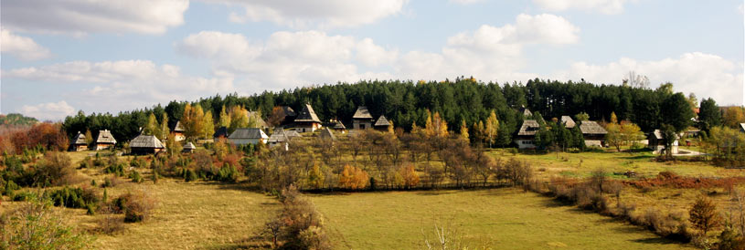
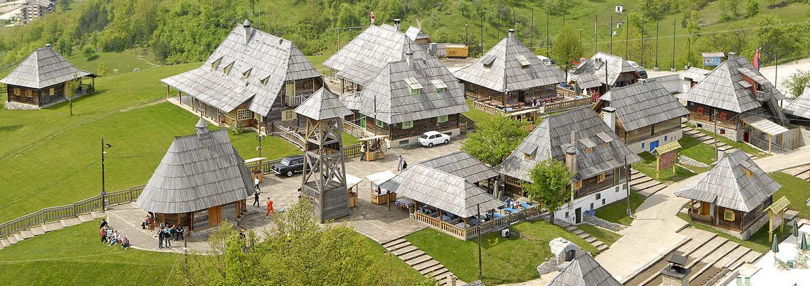

O seoskom turizmu
Zbog čega smatram seoski turizam bitnom stavkom našeg društva?
Brzim načinom života i često zbog prevelikih obaveza ljudi nemaju mogućnost pravog odmora i uživanja u prirodi koja nas okružuje.Ljudi često zaboravljaju odakle su potekli,ko su bili njihovi preci i koja je pozadina njihovog života.Negujući seoski turizam mogu se pronaći odgovori na sva pitanja,a u uz to provrodeći kvalitetno vreme u prorodi!
Kako podstaći ljude i na ovaj vid turizma?
Pravilnom promocijom!Ljudi prvo moraju biti upućeni na ovaj vid turizma kako bi onda odlučili da li žele da na ovaj način provode svoje slobodno vreme.Ne možeš želeti nešto ako nisi upoznat s tim.Zatim,treba napomenuti da je često ovakav vid turizma gde se mogu organizovati izleti,noćenja,planinarenja...jeftiniji od odlaska na more,pogotovo ako se govori o višečlanim porodicama.Letovanje,ali i svaki vid kretanja je naravno sigurnji u svojoj zemlji nego u inostranstvu.To ne znači da ne treba oblilaziti inostrane destinacije.Sve u skladu sa mogućnostima.Poklapanjem više nabrojanih faktora ljudi potom mogu shvatiti da je ovaj vid turizma nešto što njima odgovara ili ne.Ali vrlo je važno biti upoznat sa stvarima koje vam se nude!
Treba napomenuti i gastronomske užitke koji su jedni od ključnih momenata ove priče!
Šta je još bitno?
Potrebna su ulaganja.Ljudi ne vole da posećuju neuređena mesta i da time stvaraju porešan utisak o mestu u koje su došli.Prostori moraju biti čisti,uređeni i primamljivog sadržaja a to zaista nije toliko teško ako se setite kakvim sve kulturnim i istorijskim znamenitostima obiluje zapadna Srbija.Ako želite da se podsetite,kliknite ovde. Ovde dolazi do izražaja ljudska kreativnost,mašta,sposobnost da od malih drvenih kućica,stvorite pravi raj.To treba centi,i u to treba ulagati.
Etno sela
U Srbiji postoji mnogo etno sela i većinu njih ljudi rado posećuju za vreme praznika,odmora...Spoj prirode,ukusne hrane i druženja stvara jedinstvenu celinu u kojoj svi ljudi uživaju,a ljudi koji su vlasnici ovih etno sela sve to rade iz ljubavi.
Gde se sve neguje seoski turizam?
Lokacije etno sela,vikendica za odmor,često se nalaze u brdskim i planinskim krajevima,time spajajući planinski i seoski turizam.Često se organizuju pešačke ture po planinama ,zatim obilazak znamenitosti okolnih mesta i na kraju svega dobra hrana i druženje.Taj spoj privlači ljude i to je jedan od razloga njihove velike zaineteresovanosti!
Veliko interesovanje inostranih turista
Ovakav vid turizma je posebno primećen i shvaćen od strane inostranih turista.Verovatno što nisu imali prilike da se susreću sa ovakvim tipom sadržaja,pa su za njih svi ovi doživljaji novi.
Koliko je zapravo razvijen seoski turizam u Srbiji?
Seoski turizam ipak nije najrazvijenija sfera turizma u Srbiji.Planine,zatim banje i veći gradovi predstvaljaju prvi izbor destinacije većini turista.Seoski turizam uglavnom neguju pojedinci osim u slučajevima veoma poznatih destinacija kao što su Zlatibor,Tara,Zlatar.Tu se i na nivou opštinskih turističkih organizacija radi na boljoj promociji.
Pored svega navedenog ipak se može reći da se ovaj vid turizma razvija uzlaznom putanjom!Bogata kultura,istorija,priroda i gostoprimljivost to omogućavaju.
